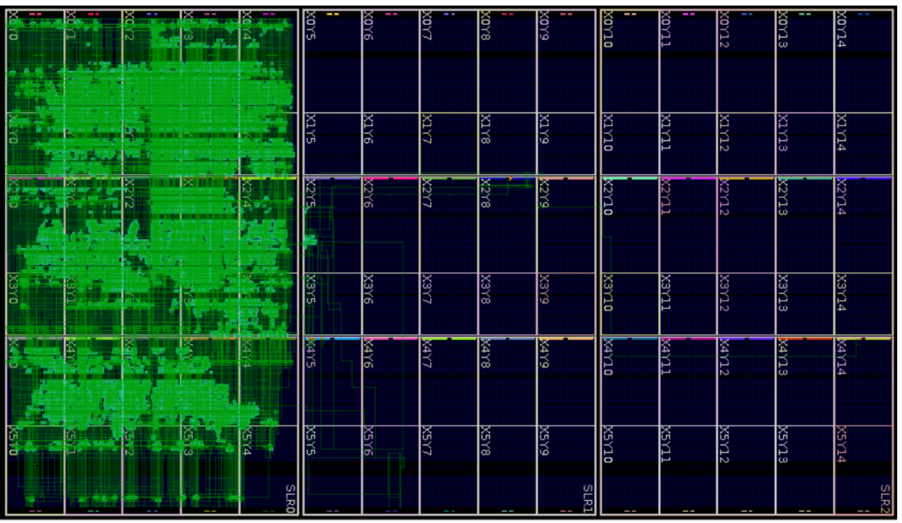

📝 Why Computer Programming is an Essential Skill
Contents
📝 Why Computer Programming is an Essential Skill#
Programming allows you to automate analysis of data, control systems, and efficiently visualize information
Many of your fellow colleagues might have less programming skills than you do, which could make you a valued resource
Knowing programming allows you to customize and modify software and hardware.
Chemical and Biomolecular Engineering#
Determining protein structures and folding
from IPython.display import IFrame
IFrame("https://alphafold.ebi.ac.uk/entry/A0A5E8GAP1", width=800, height=1200)
Civil and Environmental Engineering#
Forecasting air quality to help those who might be affected by air pollution make informed choices.
IFrame("https://airquality.weather.gov/#",width=800,height=800)
Electrical and Computer Engineering#
You might want to build a script to efficiently use computing resources for a task.

Engineering Leadership and Society#
Creating interactive dashboards and visualizations
IFrame("https://ourworldindata.org/grapher/total-cases-covid-19?tab=map", width=800, height=800)
Materials Science and Engineering#
Discovering new Materials
IFrame("https://materialsproject.org/materials/mp-1106215?chemsys=Pb-Ti-O", width=800, height=800)
Mechanical Engineering#
Robotics and control systems
IFrame('https://www.youtube.com/embed/x4O8pojMF0w', width=800, height=400)
Survey to Understand your Understanding#
Please complete this brief survey before we proceed with learning more about programming with python.
Other Cool Applications AI and Machine Learning#
IFrame('https://www.youtube.com/embed/UuhECwm31dM', width=800, height=400)
ChatGPT#
Write a 4 paragraph essay comparing xxx and yyy?
Example: Write a 4 paragraph essay comparing tiktok and the US Constitution?#
TikTok and the U.S. Constitution may seem like an unlikely pair to compare, but both have had a significant impact on modern society.
One key difference between the two is their purpose. The U.S. Constitution is a document that outlines the principles and structure of the U.S. government and serves as the supreme law of the land. TikTok, on the other hand, is a social media platform that allows users to create and share short videos.
However, both TikTok and the U.S. Constitution deal with the idea of free expression. The First Amendment of the Constitution protects the right to freedom of speech, religion, and the press, while TikTok has become a platform for users to express themselves through creative and humorous videos.
Another key difference is their medium. The U.S. Constitution is a written document, while TikTok is primarily a digital platform. However, both have had a significant impact on how people communicate and share information. The Constitution has shaped the way the U.S. government operates, while TikTok has changed the way people create and consume content online.
In conclusion, while TikTok and the U.S. Constitution may seem quite different at first glance, they both address similar themes and have had a lasting impact on modern society.